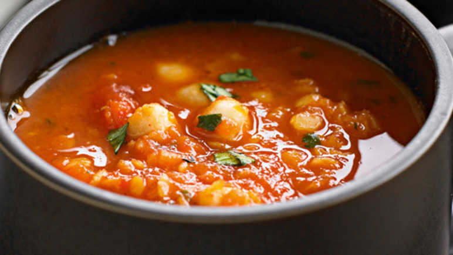

Chickpeas Soup

Checkpeas Soup
This soup is great to lounch or as a first plate in a dinner, and is delicius!
Ingredients for 5 serves
Ingredients
- 2 coups of Checkpeas [soak them all one nigth before]
- 4 midle size tomatoes
- 1 clove of garlic
- 1/4 of one onion
- A litle bunch of cilantro
- One midle size Poblano chili
- Salt [to taste]
- One coup of mushrooms [Optional]
Steps
- Put enough water to boil in a pot, the cuantity depends of how "liquid" you want the soup [but 2 fingers over the Checkpeas will be OK
- Once the water is boiling, keep the fire all up and add a litle spoon of salt
- Add the Checkpeas, -previously soak all night, right?-
- Add add a midle size Poblano's Chili, dont worry is not spicy
- Once start to boil again, reduce the fire at average fire, cover the pot and let it boil by 40 min more, remember to set the timer
- chop the tomatoes and the onion in litle cubes, chop too the garlic and the cilantro as small as you can; separate this ingredients, Do not mix them!...and reserve
- Take a litle rest, and when the timer is aproximately 15 minutes left continue with the folowin steps
- Put to heat a frying pan and add a litle of pork fat [or the oil of your preference] keep it in average fire
- Add the onion you previously chop up, and fry it for abaout 30 seconds
- Add the garlic to the frying pan
- Fry this two ingredients for about 2 minutes
- Add the tomatoes
- Continue to cook this mix while non-stoping sirring for about 10 to 15 minutes or until the tomatoes take a puree consistency
- Add a pich of salt to this puree
- Once the the 40 min. timer rings, low the fire to low heat of your pot and add the tomatoe puree
- Test your soup for salt and add more if it needs it
- if you are a strong flavour foodie you can add here some ground pepper ;D
- Once our soup start to boiling again add the choped cilantro
- another cool ingredient you can add here will be sliced moshrooms, that will be a nice mix if you are into it!
- Boil for abaout two more minutes and... there you go your delicius Checkpeas soup!
Come back to the main page